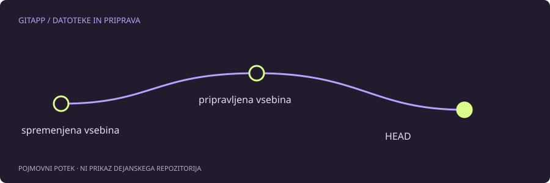

Napačna datoteka v naslednji potrditvi
Ukaz git add pripravi vsebino za naslednjo potrditev. Če si pripravil preveč datotek, ni treba zavreči njihovih lokalnih sprememb. Popraviti želiš izbor oziroma vsebino indeksa, ne delovnega drevesa.
Pri repozitoriju z obstoječo potrditvijo lahko za eno pot uporabiš git restore --staged. Privzeti vir za obnovo indeksa je takrat HEAD. Delovna datoteka s tem ukazom ostane nespremenjena, indeks pa za izbrano pot znova ustreza zadnji potrditvi.
Najprej preveri obe primerjavi
V primeru je izbrana datoteka opombe.txt. Če ima ime presledke, pot ustrezno navedi v narekovajih.
git status --short
git diff --cached -- opombe.txt
git diff -- opombe.txtPrva razlika kaže pripravljeno vsebino. Druga kaže, kaj si po pripravi še spremenil v delovni datoteki. Obe sta lahko hkrati neprazni. To ni napaka: indeks je ločen posnetek in se ne osvežuje ob vsakem shranjevanju v urejevalniku.
Ciljni poseg
Če želiš odstraniti pripravo prav te poti, je primer ukaza:
git restore --staged -- opombe.txtPo njem ponovno preglej git status, git diff in git diff --cached. Pri prej sledeni datoteki bi morale lokalne spremembe ostati kot nepripravljene. Pri novi datoteki se lahko spremeni v nesledeno pot. Ne sklepaj, da nesledena datoteka ne obstaja več.
Zakaj ne uporabimo navadnega restore
git restore -- opombe.txt brez možnosti --staged cilja delovno drevo in ga privzeto obnovi iz indeksa. S tem lahko izgubiš nepripravljene spremembe v tej datoteki. Razlika ene možnosti zato pomeni drugačen cilj ukaza, ne zgolj drugačnega zapisa iste operacije.
Če želiš datoteko za zdaj samo izločiti iz potrditve, izberi poseg v pripravo. Če želiš vsebino zavreči, najprej naredi neodvisno kopijo in razumi vir obnove. Takšna odločitev je ločena od urejanja priprave.
Omejitve in prva potrditev
Ta primer predpostavlja obstoječ HEAD in stanje brez nerešenega spora. Pred prvo potrditvijo privzeti vir še ne obstaja, zato ukaz lahko vrne napako. Ne dodajaj drugih možnosti na slepo. Preveri uradni postopek za odstranjevanje poti iz indeksa v novem repozitoriju.
Prav tako ne uporabljaj množičnega posega na vseh datotekah, če želiš popraviti samo eno. Pregled priprave pred potrditvijo je kratek korak, ki lahko prepreči precej večjo zmedo pozneje.
Vir in obseg
Referenca: uradni priročnik za git-restore. Primeri so pripravljeni za učenje in niso opis posega v dejanski projekt. Preberi način preverjanja.